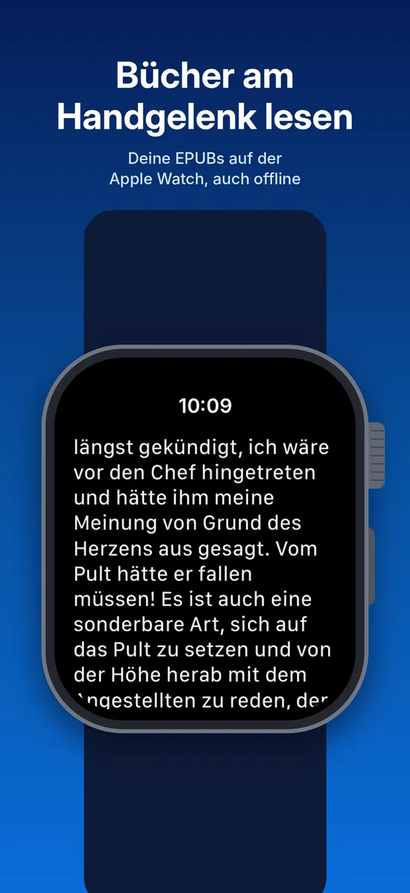
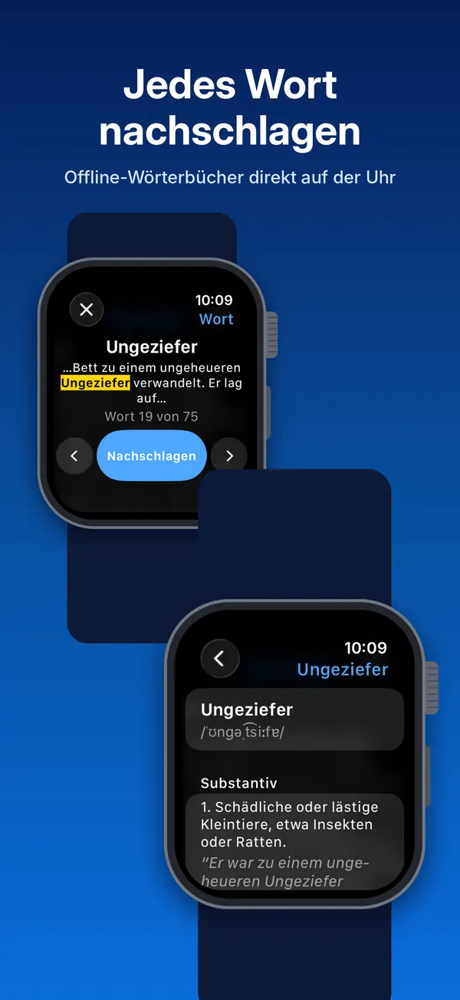
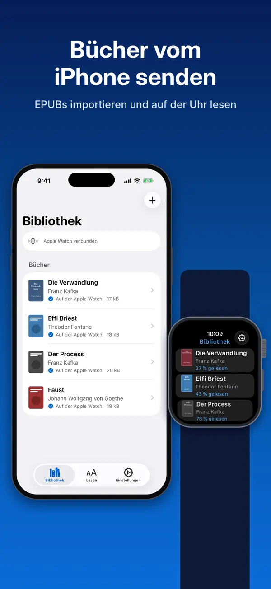
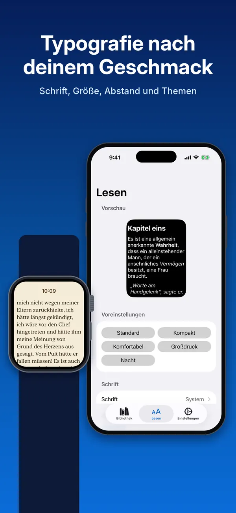
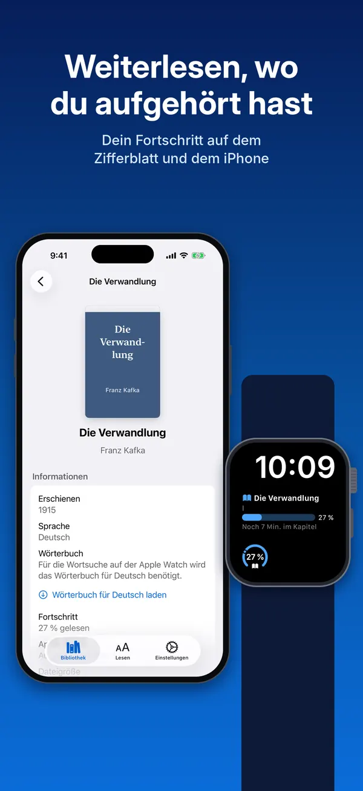

Folito
Ein EPUB-Reader für die Apple Watch. Bring deine eigenen Bücher mit – ganz ohne Account.
App Store – bald verfügbar

- Kostenlos, mit allen Funktionen
- Offline lesen auf der Uhr
- Optionaler Sync: KOReader Sync, Readest
- VoiceOver und Dynamic Type
Was die App kann
Eine vollwertige Lese-App, gemacht für den kleinsten Bildschirm, den du besitzt.
Importieren und offline lesen
Importiere deine eigenen
.epub-Bücher auf dem iPhone (über „Dateien“, das Teilen-Menü oder den Import-Button). Sie werden an deine Uhr gesendet, wo du sie offline liest. Cover, Reihen und Beschreibungen stammen direkt aus der EPUB-Datei.Fortschritt und Komplikationen
Der Reader schätzt die verbleibende Zeit im Kapitel und im Buch anhand deiner eigenen Lesegeschwindigkeit. Eine Komplikation auf dem Zifferblatt oder der Smart Stack zeigt deinen Fortschritt und bringt dich zurück zu deiner Seite.
Typografie nach deinem Geschmack
Wähle Schrift, Textgröße, Zeilen-, Absatz- und Zeichenabstand, Ränder, Überschriftengröße und ein Lesethema – auf der Uhr oder dem iPhone. Der Buchtext kann auch der Textgröße deiner Uhr folgen.
Jedes Wort nachschlagen
Offline-Nachschlagen auf der Uhr mit kostenlosen Wörterbüchern, die reader.dict aus Wiktionary erstellt (CC BY-SA 4.0): Englisch, Spanisch, Französisch, Deutsch, Italienisch, Portugiesisch, Japanisch und Chinesisch, geladen auf dem iPhone. Gibt es für die Sprache des Buchs kein Wörterbuch auf der Uhr, sagt Folito, welches fehlt und wo du es bekommst.
Optionale Synchronisierung
Optional: Synchronisiere deinen Lesefortschritt mit einem KOReader-Sync-Server oder mit Readest Cloud und lies in KOReader oder den Readest-Apps weiter. Die Synchronisierung geht nur vorwärts: Die Uhr bietet einen Sprung nur an, wenn ein anderes Gerät weiter ist. Sie bleibt aus, bis du dich mit deinem eigenen Konto anmeldest; der Entwickler betreibt keinen Server.
Deine Readest-Bibliothek auf dem iPhone
Bist du bei Readest angemeldet, zeigt die Bibliothek auf dem iPhone auch die Bücher deiner Readest-Bibliothek. Stöbere darin, lade eines auf iPhone und Uhr oder lade deine eigenen Bücher zu Readest hoch.
Buchdetails und Cover
Nur wenn du es möchtest: Das iPhone kann ein fehlendes Cover oder eine fehlende Beschreibung über Open Library ergänzen, für ein Buch oder für jeden neuen Import. Standardmäßig aus; sonst wird nichts abgefragt.
Für alle gemacht
VoiceOver, Dynamic Type, fetter Text, erhöhter Kontrast und Dunkelmodus auf dem iPhone und der Uhr. Die Lesethemen erfüllen die WCAG-Kontrastverhältnisse.
Datenschutz von Anfang an
Keine Konten beim Entwickler, keine Werbung, keine Analysen, kein Tracking. Der Entwickler betreibt keinen Server und erhält keine Daten.
Bildschirmfotos
Folito auf der Apple Watch und dem iPhone.





Bevor du loslegst
Woher bekomme ich Bücher?
Folito liest EPUB-Dateien ohne DRM. Du findest sie in gemeinfreien Bibliotheken wie Project Gutenberg und Standard Ebooks, bei Shops und Verlagen, die EPUBs ohne DRM verkaufen, oder du nimmst die Dateien, die du schon hast.
Bücher, die mit DRM bei Kindle, Apple Books oder Kobo gekauft wurden, lassen sich nicht öffnen.
Um ein Buch hinzuzufügen, öffne die Datei auf dem iPhone in der App „Dateien“ oder über das Teilen-Menü und wähle Folito, oder tippe in der Bibliothek auf EPUB importieren. Wenn du dich bei Readest anmeldest, zeigt die Bibliothek auch die Bücher deiner Readest-Bibliothek zum Laden an. Nur ausprobieren? Die App enthält ein kurzes Beispielbuch in deiner Sprache.
Was du brauchst
- Kostenlos, mit allen Funktionen: keine In-App-Käufe, keine Werbung, kein Konto, keine Analysen.
- Ein iPhone mit iOS 17 oder neuer.
- Eine Apple Watch mit watchOS 10 oder neuer: Apple Watch Series 4 oder neuer, einschließlich Apple Watch SE und Apple Watch Ultra.
Bücher werden auf dem iPhone importiert und an die gekoppelte Uhr gesendet; ein Account ist nicht nötig.